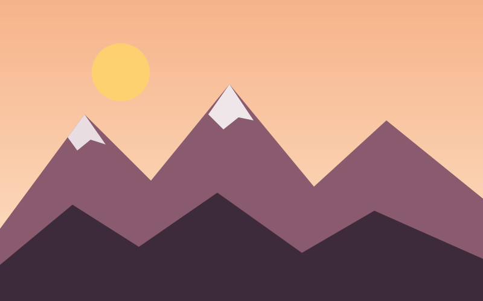
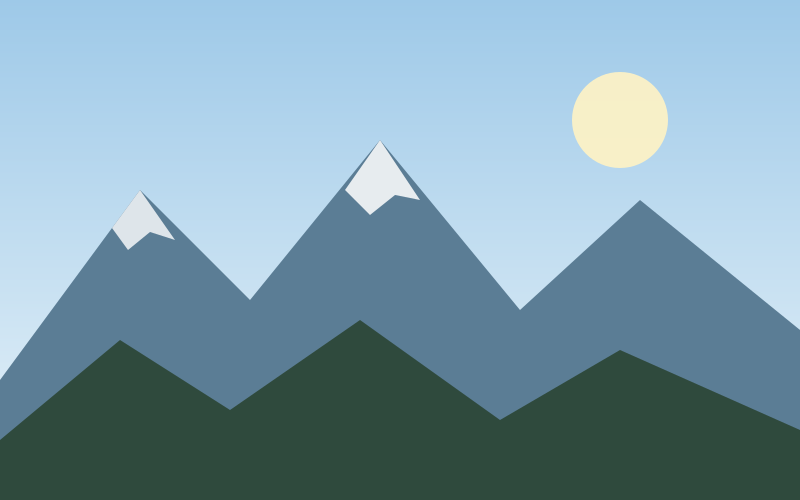
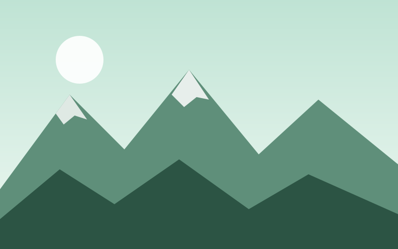
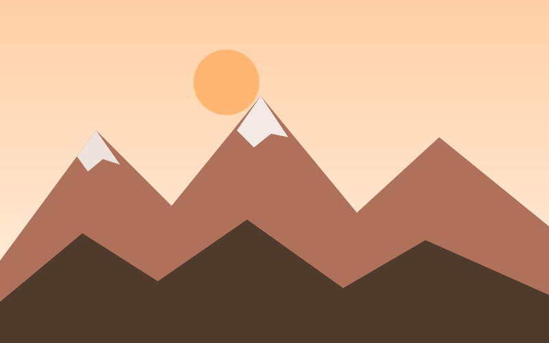

Галерея
Кадры, которые участники привезли из наших походов.




Горы в разные сезоны
Мы ходим круглый год — у каждого сезона свой характер.
-
Март — май
Весна
Цветут тюльпаны и подснежники, на вершинах ещё снег.
-
Июнь — август
Лето
Высокие маршруты, озёра и ночёвки под звёздами.
-
Сентябрь — ноябрь
Осень
Золотые склоны и самая чистая погода для фото.
-
Декабрь — февраль
Зима
Снегоступы, горячий чай и тишина заснеженного леса.